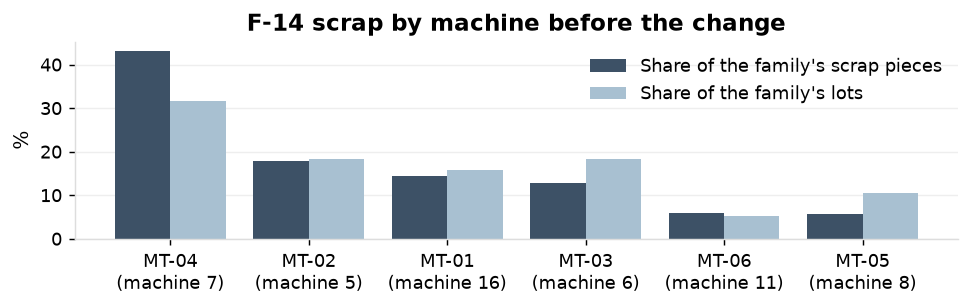
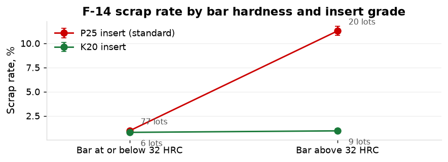

MT-04 carried 43% of the scrap on family F-14 and is named on the scrap report as the cause. The family scrapped 3.6% of 70,605 pieces before the change against 1.7% on F-12, the same material and route.

Family scrap rate below 1.0% on every bar lot, held through 2026.

| Action | Owner | When |
|---|---|---|
| K20 insert on bar above 32 HRC; bar hardness checked at receiving on every F-14 lot; insert grade recorded on the job (CAPA-25-010) | Quality engineer E-0161 | opened 8 April 2025; first K20 lot 14 May 2025; closed 15 September 2025 |
| Insert grade recorded on every job on the other 4140 families | Production manager | March 2026 |
| 4140 bar for the family specified at 32 HRC or below, or the K20 insert priced into lots above it | Purchasing manager | March 2026 |
| Material hardness added to the NCR cause-code list; F-14 scrap by hardness band on the monthly scrap report | Quality manager | March 2026 |
Scrap rate 3.55% before, 0.87% on the 25 lots of the confirmation window (p < 0.001) and 0.92% on all 36 lots since; F-12 unchanged at 1.72% and 1.60%. Scrap cost $4,196 a month before, $766 since.
| Lots | Pieces | Scrap rate | |
|---|---|---|---|
| Before the change | 76 | 70,605 | 3.55% |
| Confirmation window | 25 | 22,650 | 0.87% |
| All lots since | 36 | 32,845 | 0.92% |
Scrap rate by bar hardness band on the monthly report. The next bar lot above 32 HRC run on the standard insert, if any, flagged at release.